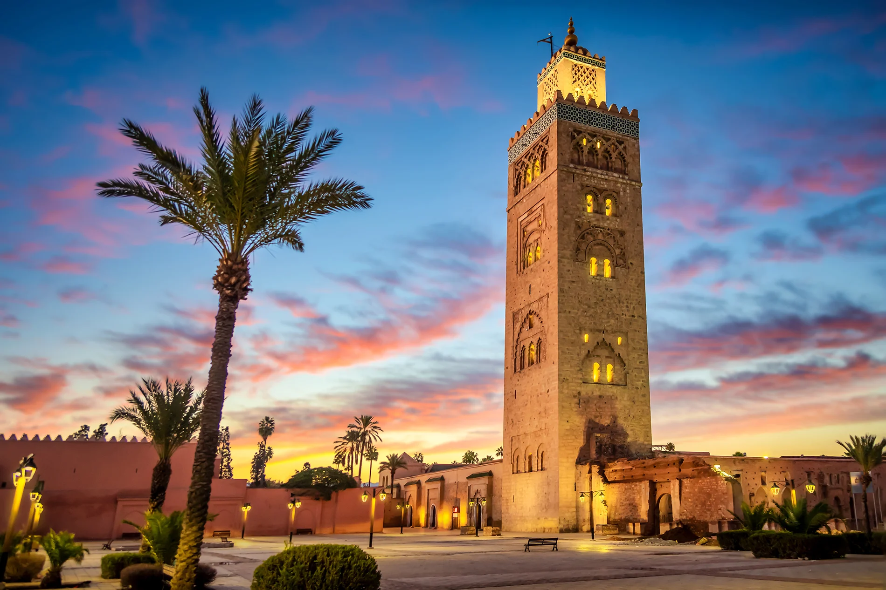

Marrakech, often called the Red City, is one of Morocco’s most vibrant and culturally rich destinations. Known for its ancient medina, colorful souks, and lively Jemaa el-Fna square, the city blends tradition with modernity in a unique way. Visitors can explore historic sites like the Koutoubia Mosque, Bahia Palace, and the beautiful Majorelle Garden, while also enjoying luxury riads, spas, and contemporary art galleries. With its warm climate, rich cuisine, and enchanting atmosphere, Marrakech offers a captivating experience where history, art, and everyday life come together in a truly magical setting.